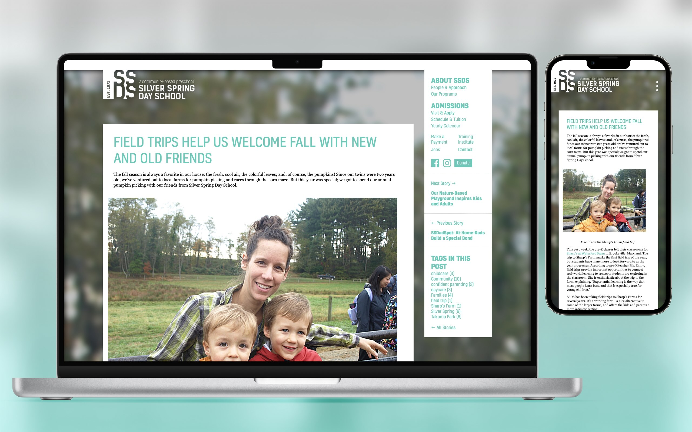

Community-centric Preschool Brand and Web Redesign
Silver Spring Day School (SSDS) is a parent participatory preschool with a philosophy centered around active learning through community, discovery, and exploration. We wanted to communicate these values while emphasizing the people in the SSDS community, so the new direction centers around highlighting participant photography.
For the website, our goal was to create a function-first resource hub for current and potential participants. We utilized signposting via large color block grids and bold typography to counterbalance all the photography.
- Details
- Client: Silver Spring Day School
- Studio: King Cow Interactive



Blog post